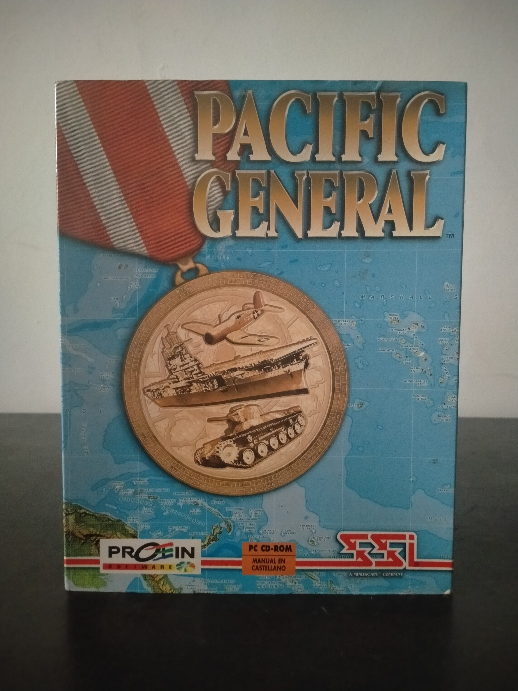

Ficha #000089
Pacific General
Pacific General es un wargame de estrategia por turnos publicado dentro de la familia 5-Star Series de SSI y ambientado en el teatro del Pacífico de la Segunda Guerra Mundial. Frente al enfoque europeo y terrestre de Panzer General, esta entrega desplaza el centro de gravedad hacia las campañas entre Japón y Estados Unidos, incorporando operaciones anfibias, aviación embarcada, portaaviones, acorazados, islas estratégicas y un modelo de combate naval mucho más relevante que en entregas anteriores. Utiliza una evolución del motor de Panzer General y Allied General, con campañas y escenarios para ambos bandos, juego por red o módem y un generador de batallas cargado con mapas y unidades de títulos previos de la serie. Esta edición española en caja grande para PC CD-ROM, distribuida por Proein Software, conserva especial interés para la preservación por representar una de las variantes menos comunes de la línea SSI 5-Star Series y por documentar la transición del wargame accesible de MS-DOS hacia Windows 95.
- Formato
- Big Box
- Plataforma
- Win95
- Género
- Estrategia por turnos Wargame Simulación bélica Estrategia histórica
- Serie
- Todos Big Box
- Desarrollador
- SSI Special Projects Group
- Distribuidor
- Strategic Simulations, Inc., Mindscape, Proein Software
- EAN
- —
Contenido de la edición
- Caja exterior Big Box
- Manual de usuario
- CD-ROM en caja jewel case
- Hoja de instalación
Preservación
- Protección
- No determinado
- Formato recomendado
- ISO
- Jugable en virtualización
- Sí
Preservación recomendada mediante imagen ISO del CD-ROM original y digitalización de manual, hoja de instalación y caja. La ejecución virtual es viable en una máquina Windows 95 configurada para juegos de la época; conviene verificar si la edición concreta realiza comprobación de presencia del CD durante la ejecución.